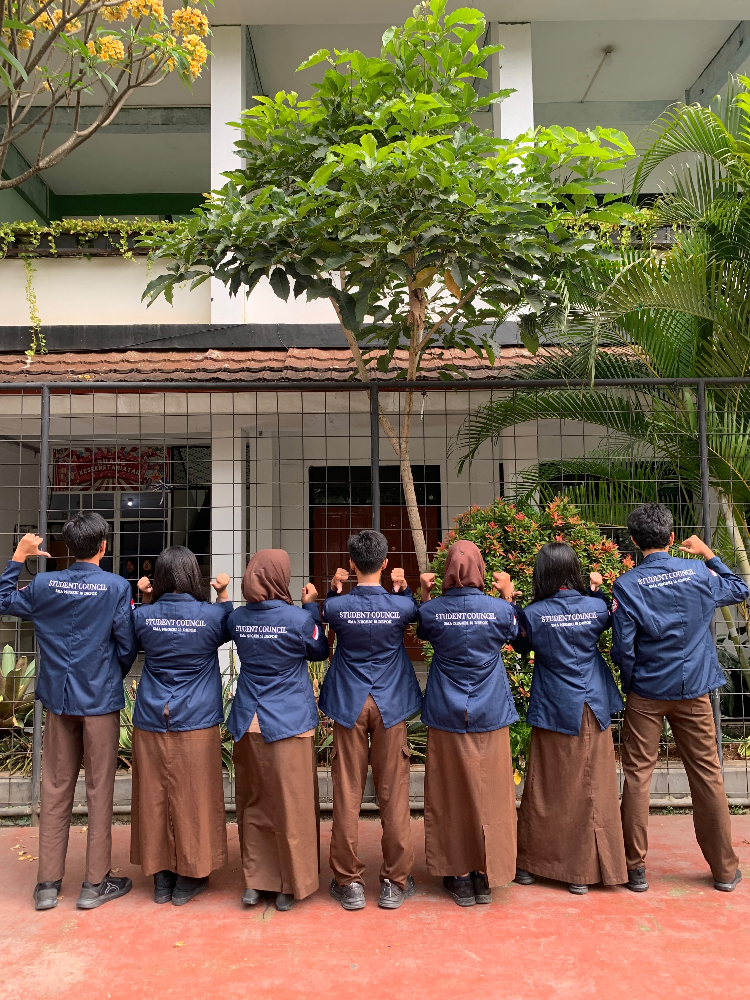
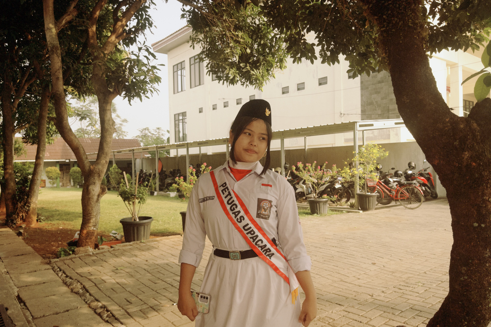

Carinna Beatricia Sinaga
Saya merupakan siswa kelas XII-3. Saya adalah siswa yang memiliki semangat untuk belajar dan selalu berusaha bekerja sama bersama teman dalam berbagai kegiatan akademik maupun non-akademik.
SMA NEGERI 10 DEPOK
Nama : Carinna Beatricia Sinaga
Kelas : XII-3
Sekolah : SMAN 10 DEPOK
Tanggal Lahir : 2 Mei 2008
Menjadi seorang Engineer, khususnya di bidang Teknik Sipil, agar dapat berkontribusi dalam pembangunan infrastruktur yang bermanfaat bagi masyarakat.


Dokumentasi kegiatan sekolah dan kegiatan pribadi.